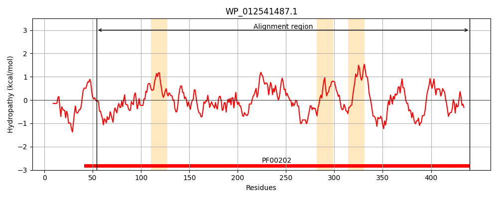
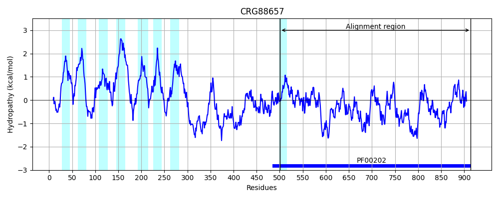
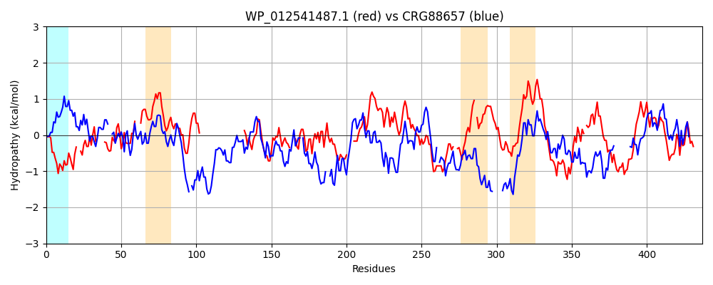

Hit Accession: CRG88657
Hit TCID: 9.B.313.1.2
Hit Description: gnl|BL_ORD_ID|2913 gnl|TC-DB|CRG88657|9.B.313.1.2 4-aminobutyrate aminotransferase / (S)-3-amino-2-methylpropionate transaminase [Talaromyces islandicus]
Mach Len: 437
e:0.000000
Query TMS Count : 3
Hit TMS Count: 8
TMS-Overlap Score: 0.000000
Predicted Substrates:None
BLAST Alignment:
Score: 270 , Bit scores: 108 bits, E-value: 3.1e-25, Alignment length: 437, Percentage identity: 28
Query: 54 GAWMEDSAGNRYLDMYNNVPG--VGHCHPHITQA-----MVRQAGLLNTNTRYLFPVLEQ---YADSLLATFPAGLSNVIFTCTGSESNDIALRMARFISGRE-----------------------------GIIVTESAYHGNTTAVMEVSPSGHKEALLPP---WVHTIPAPDLRRLSAGQTLSDLFAADVERAMDELD----ERGYGCAALLVDTIFSSDGVFADPPGFLAQAVARVQARGGLFIADEVQPGFGRTGSHFWGFQRHSVQ--PDIVTLGKPMGN-GFPMAAVITRPAILQAFSEKTEYFNTFGGNPVAAAVGLAVLEVIEQEALMTNAQRNGDYLRAGLRQLAQDFP-AIADIRGAGLFNAIEFARPDSGEPDPQLTSRVIYHLKLEGVLIGAAGRFGNSLKIRPPLCFSRDDADFFLERLAKVI 440
G ++ D GN LD+Y + VG+ +PH+ A MVR L++ FP + LL P GL+ V GS++N+ A + A F+ R+ I+ +SA+HG + + S L P W P P L+ + AA+ +R + E + E AA++V+ I S G P F + LFI DEVQ G G TG FW ++Q PD+VT K G+ RP ++ FNT+ G+P A + A+LE IE + L+ N GDYL GL LAQ +P AI ++RG G I + P +R + K + V + G +++++RP L F + AD LERL +I
Sbjct: 501 GNYLVDLDGNVLLDVYAQIASIPVGYNNPHLAAAVNTPEMVR--ALIDRPALGNFPSADWSNILKTGLLRAAPKGLNQVFTALAGSDANETAYKAA-FMYRRQQERGGANVDFSDADTTSAMLNQSPGSPNMSIMSFKSAFHGRLFGSLSTTRSKPIHKLDIPAFDWPQA-PFPALKYPLEEHVQEN--AAEEKRCLAEAERIIKEFHNPVAAVVVEPIQSEGGDNHASPAFFQGLRDITKRNNVLFIVDEVQTGVGATGK-FWAHDHWNLQSPPDLVTFSKKAQTAGYYYGNPALRP------NKPYRQFNTWMGDPARAILFRAILEEIESKGLVENTAATGDYLYNGLESLAQKYPQAIQNLRGKGQGTFIAWDSP----------NRDAFLAKAKSVGVNIGGSGASAVRLRPMLIFQKHHADLLLERLETLI 914 | Protein Hydropathy Plots: |
|---|
|  |  |
Pairwise Alignment-Hydropathy Plot:
|
|---|
|  |